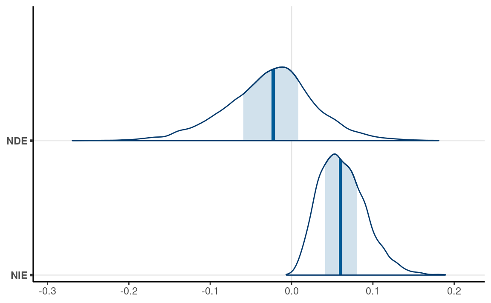
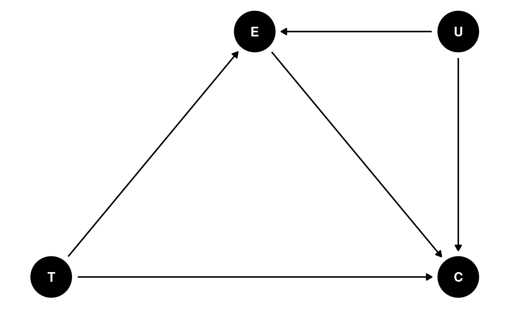
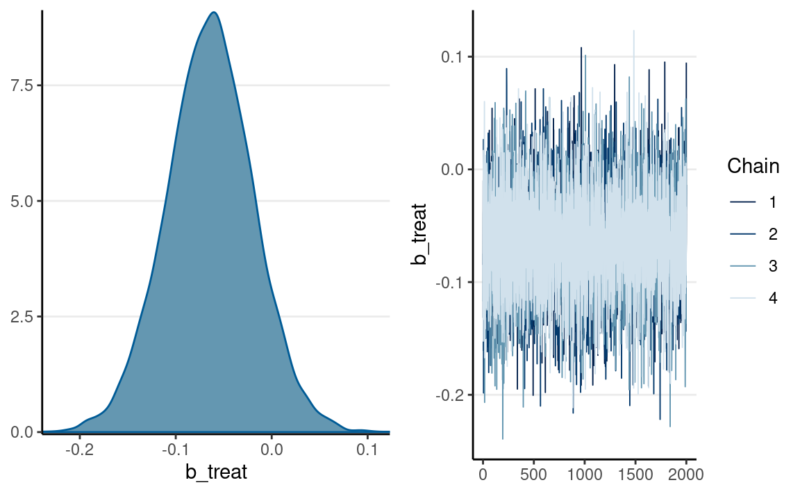
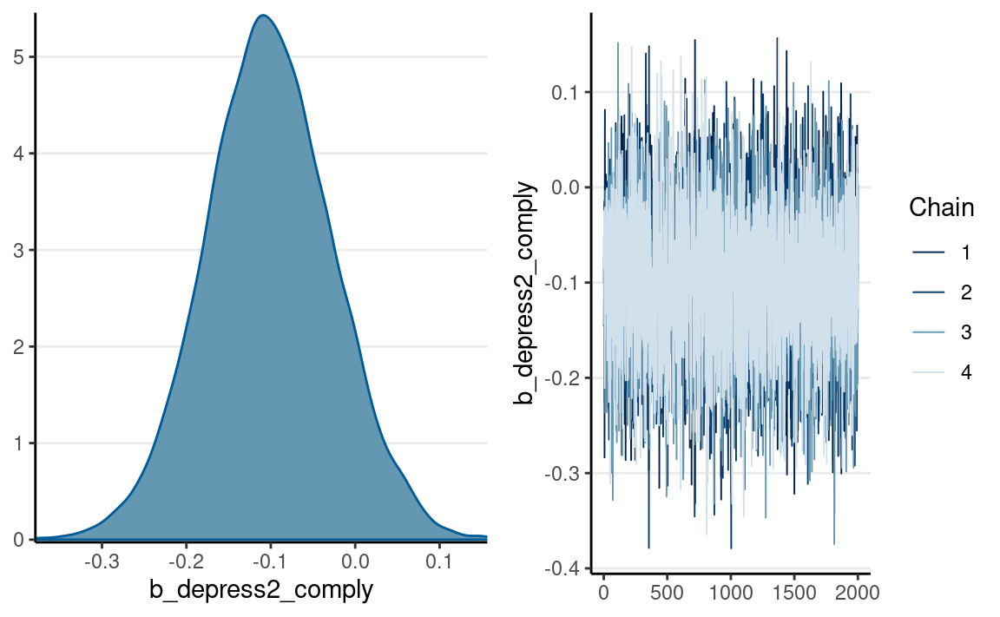

library(tidyverse)
library(here)
library(dagitty) # for drawing DAGs
library(ggdag) # render DAGs in ggplot style
library(rstan)
rstan_options(auto_write = TRUE) # save compiled Stan object
library(brms) # simplify fitting Stan GLM models
library(posterior) # for summarizing draws
library(bayesplot) # for plotting
library(modelsummary) # table for brms
theme_set(theme_classic() +
theme(panel.grid.major.y = element_line(color = "grey92")))
Causal inference is an important topic in statistics, but it also has a complicated history with statistics. Early-day statisticians see causality as a taboo such that researchers were discouraged from drawing any causal conclusions in nonexperimental research. In the past few decades, much progress has been made on causal inference in epidemiology, computer science, and statistics, with several frameworks proposed and many tools developed for experimental and nonexperimental data. This note will introduce the causal diagram framework for encoding causal assumptions, which can be used to guide analysis for drawing causal conclusions. The goal is to give you some basic ideas so that you can learn more from other sources, such as the book Causality by Pearl.
What is Causal Inference?
Causal inference is the process of determining the causal effect of one variable on another, based on data and causal assumptions. Two common ways of interpreting a causal effect are (a) intervention: how \(Y\) will change if \(X\) is manipulated to be \(x\); (b) counterfactual: what would \(Y\) be if \(X\) were set to \(x\).
Directed Acyclic Graph (DAG)
DAG is a tool for encoding causal assumptions. It contains nodes and paths. A node is usually a variable that can be measured in the data or unmeasured. Generally, paths in a DAG are directional (as implied by directed), which indicates the directions of causal relations. Acyclic means the causal chain does not close in a loop.
We can use an example described in McElreath (2020, chapter 5) about data from 50 U.S. states from the 2009 American Community Survey (ACS).
waffle_divorce <- read_delim( # read delimited files
"https://raw.githubusercontent.com/rmcelreath/rethinking/master/data/WaffleDivorce.csv",
delim = ";"
)
# Rescale Marriage and Divorce by dividing by 10
waffle_divorce$Marriage <- waffle_divorce$Marriage / 10
waffle_divorce$Divorce <- waffle_divorce$Divorce / 10
waffle_divorce$MedianAgeMarriage <- waffle_divorce$MedianAgeMarriage / 10
# See data description at https://rdrr.io/github/rmcelreath/rethinking/man/WaffleDivorce.html
The outcome of interest is the divorce rate. The plot shows how marriage rate is related to divorce rate at the state level.
ggplot(waffle_divorce,
aes(x = Marriage, y = Divorce)) +
geom_point() +
geom_smooth() +
labs(x = "Marriage rate (per 10 adults)",
y = "Divorce rate (per 10 adults)") +
ggrepel::geom_text_repel(aes(label = Loc))
It looks like marriage rate can predict divorce rate. A causal interpretation would be a stronger assertion, such that we expect to see a higher divorce rate if policymakers encourage more people to get married. In order to make a causal claim, we need to remove potential confounders.
A potential confounder is when people get married. If people are forced to get married later in life, fewer people in the population will be married, and people may have less time, opportunity, and motivation to get divorced (as it may be harder to find a new partner). Therefore, we can use the following DAG:
We can look at how the median age people get married in different states relates to the divorce rate:
ggplot(waffle_divorce,
aes(x = MedianAgeMarriage, y = Divorce)) +
geom_point() +
geom_smooth() +
labs(x = "Median age marriage (10 years)",
y = "Divorce rate (per 10 adults)") +
ggrepel::geom_text_repel(aes(label = Loc))
Assumptions in a DAG
In a graphical model, there are usually two kinds of assumptions conveyed. Perhaps counterintuitively, the weaker assumptions are the ones you can see, whereas the stronger assumptions are ones you do not see.
For example, a weak assumption is: - Marriage age may directly influence the number of people who are married
On the other hand, examples of a strong assumption are: - Marriage rate does not directly influence the age people get married - there is no other variable in the causal pathway M D
The last assumption will not hold if there is a common cause of M and D other than A.
Basic Types of Junctions
- Fork: A B C
- A and C are correlated due to a common cause B
- Chain/Pipe: A B C
- B is on the causal pathway of A to C
- Collider: A B C
- B is a descendant of both A and C
Going back to our example, there is a fork relation: M A D. In this case, A is a confounder when estimating the causal relation between M and D. In this case, the causal effect of M to D can be obtained by adjusting for A, which means looking at the subsets of data where A is constant. In regression, adjustment is obtained by including both M and A as predictors of D.
Multiple Regression Model
\[ \begin{aligned} D_i & \sim N(\mu_i, \sigma) \\ \mu_i & = \beta_0 + \beta_1 A_i + \beta_2 M_i \\ \beta_0 & \sim N(0, 1) \\ \beta_1 & \sim N(0, 1) \\ \beta_2 & \sim N(0, 1) \\ \end{aligned} \]
Assuming a correctly specified DAG, \(\beta_2\) is the causal effect of M on D. Here is the Stan code:
data {
int<lower=0> N; // number of observations
int<lower=0> p; // number of predictors
vector[N] y; // outcome;
matrix[N, p] x; // predictor matrix;
}
parameters {
real beta0; // regression intercept
vector[p] beta; // regression coefficients
real<lower=0> sigma; // SD of prediction error
}
model {
// model
y ~ normal_id_glm(x, beta0, beta, sigma);
// prior
beta0 ~ normal(0, 5);
beta ~ std_normal();
sigma ~ student_t(4, 0, 5);
}
generated quantities {
vector[N] y_rep; // place holder
for (n in 1:N)
y_rep[n] = normal_rng(beta0 + dot_product(beta, x[n]), sigma);
}And using brms:
Table
msummary(m1,
estimate = "{estimate} [{conf.low}, {conf.high}]",
statistic = NULL, fmt = 2
)
| Model 1 | |
|---|---|
| b_Intercept | 3.50 [2.04, 5.04] |
| b_MedianAgeMarriage | 0.94 [1.42, 0.46] |
| b_Marriage | 0.04 [0.19, 0.13] |
| sigma | 0.15 [0.12, 0.18] |
| Num.Obs. | 50 |
| ELPD | 21.0 |
| ELPD s.e. | 6.5 |
| LOOIC | 41.9 |
| LOOIC s.e. | 13.0 |
| WAIC | 42.3 |
| RMSE | 0.14 |
As shown in the table, when holding constant the median marriage age of states, marriage rate has only a small effect on divorce rate.
Posterior predictive checks
pp_check(m1, ndraws = 100) # density
pp_check(m1, type = "intervals", x = "MedianAgeMarriage") +
labs(x = "MedianAgeMarriage", y = "Divorce")

The model does not fit every state (e.g., UT, ME, ID).
Predicting an Intervention
If the causal assumption in our DAG is reasonable, we have obtained an estimate of the causal effect of marriage rate on divorce rate at the state level. This allows us to answer questions like
What would happen to the divorce rate if we encourage more people to get married (so the marriage rate increases by 10 percentage points)?
We can use the Bayesian model, which is generative, to make such predictions. Consider a state with a marriage rate of 2 (per 10 adults). The predicted divorce rate is
\[\beta_0 + \beta_1 A + \beta_2 (2)\]
Consider an intervention that makes the marriage rate increase from 2 to 3. The predicted divorce rate will be
\[\beta_0 + \beta_1 A + \beta_2 (3)\]
The change in divorce rate is
\[\beta_0 + \beta_1 A + \beta_2 (3) - \beta_0 + \beta_1 A + \beta_2 (2) = \beta_2\]
Here is what the model would predict in terms of the change in the divorce rate (holding median marriage age to 25 years old), using R:
pred_df <- data.frame(
Marriage = c(2, 3),
MedianAgeMarriage = c(2.5, 2.5)
)
pred_df %>%
bind_cols(fitted(m1, newdata = pred_df)) %>%
knitr::kable()
| Marriage | MedianAgeMarriage | Estimate | Est.Error | Q2.5 | Q97.5 |
|---|---|---|---|---|---|
| 2 | 2.5 | 1.068001 | 0.0336952 | 1.0013591 | 1.134729 |
| 3 | 2.5 | 1.026806 | 0.0675676 | 0.8937086 | 1.160087 |
The difference should be just the estimate of \(\beta_2\), which has the following posterior distribution:
mcmc_dens(m1, pars = "b_Marriage")
Randomization
Well use the framing data set from the
mediation package, so youll need to have the package
installed first. The data were analyzed in a report in the
American Journal of Political Science. The study examined whether
news about the costs of immigration boosts white opposition
(p.959).
Summary Statistics Tables
Ill take a quick detour to introduce you to some useful functions
for tabulating your data. The functions will be from the
modelsummary package.
data(framing, package = "mediation")
# Subtract the `emo` variable by 3 so that it starts from 0-9
framing$emo <- framing$emo - 3
# Quick summary of selected variables
datasummary_skim(framing)
| Unique (#) | Missing (%) | Mean | SD | Min | Median | Max | ||
|---|---|---|---|---|---|---|---|---|
| age | 63 | 0 | 47.8 | 16.0 | 18.0 | 47.0 | 85.0 | |
| income | 19 | 0 | 10.8 | 3.9 | 1.0 | 11.0 | 19.0 | |
| emo | 10 | 0 | 4.0 | 2.8 | 0.0 | 4.0 | 9.0 | |
| p_harm | 7 | 0 | 5.9 | 1.8 | 2.0 | 6.0 | 8.0 | |
| tone | 2 | 0 | 0.5 | 0.5 | 0.0 | 1.0 | 1.0 | |
| eth | 2 | 0 | 0.5 | 0.5 | 0.0 | 1.0 | 1.0 | |
| treat | 2 | 0 | 0.3 | 0.4 | 0.0 | 0.0 | 1.0 | |
| immigr | 4 | 0 | 3.0 | 1.0 | 1.0 | 3.0 | 4.0 | |
| anti_info | 2 | 0 | 0.1 | 0.3 | 0.0 | 0.0 | 1.0 | |
| cong_mesg | 2 | 0 | 0.3 | 0.5 | 0.0 | 0.0 | 1.0 |
# Summary by treatment condition (`tone`)
datasummary_balance(~ tone, data = framing)
| Mean | Std. Dev. | Mean | Std. Dev. | Diff. in Means | Std. Error | ||
|---|---|---|---|---|---|---|---|
| age | 48.4 | 16.0 | 47.1 | 16.0 | -1.3 | 2.0 | |
| income | 11.0 | 3.9 | 10.6 | 3.9 | -0.4 | 0.5 | |
| emo | 3.4 | 2.6 | 4.5 | 2.8 | 1.1 | 0.3 | |
| p_harm | 5.5 | 1.8 | 6.2 | 1.7 | 0.7 | 0.2 | |
| eth | 0.5 | 0.5 | 0.5 | 0.5 | 0.0 | 0.1 | |
| treat | 0.0 | 0.0 | 0.5 | 0.5 | 0.5 | 0.0 | |
| immigr | 2.8 | 1.0 | 3.2 | 0.9 | 0.4 | 0.1 | |
| anti_info | 0.1 | 0.3 | 0.1 | 0.3 | 0.0 | 0.0 | |
| cong_mesg | 0.3 | 0.5 | 0.4 | 0.5 | 0.0 | 0.1 | |
| N | Pct. | N | Pct. | ||||
| cond | not asked | 0 | 0.0 | 0 | 0.0 | ||
| refused | 0 | 0.0 | 0 | 0.0 | |||
| control | 0 | 0.0 | 0 | 0.0 | |||
| 1 | 0 | 0.0 | 68 | 50.4 | |||
| 2 | 0 | 0.0 | 67 | 49.6 | |||
| 3 | 67 | 51.5 | 0 | 0.0 | |||
| 4 | 63 | 48.5 | 0 | 0.0 | |||
| anx | not asked | 0 | 0.0 | 0 | 0.0 | ||
| refused | 0 | 0.0 | 0 | 0.0 | |||
| very anxious | 34 | 26.2 | 26 | 19.3 | |||
| somewhat anxious | 48 | 36.9 | 38 | 28.1 | |||
| a little anxious | 31 | 23.8 | 43 | 31.9 | |||
| not anxious at all | 17 | 13.1 | 28 | 20.7 | |||
| educ | not asked | 0 | 0.0 | 0 | 0.0 | ||
| refused | 0 | 0.0 | 0 | 0.0 | |||
| less than high school | 6 | 4.6 | 14 | 10.4 | |||
| high school | 48 | 36.9 | 44 | 32.6 | |||
| some college | 31 | 23.8 | 39 | 28.9 | |||
| bachelors degree or higher | 45 | 34.6 | 38 | 28.1 | |||
| gender | not asked | 0 | 0.0 | 0 | 0.0 | ||
| refused | 0 | 0.0 | 0 | 0.0 | |||
| male | 64 | 49.2 | 62 | 45.9 | |||
| female | 66 | 50.8 | 73 | 54.1 | |||
| english | Strongly Favor | 1 | 0.8 | 6 | 4.4 | ||
| Favor | 15 | 11.5 | 10 | 7.4 | |||
| Oppose | 44 | 33.8 | 38 | 28.1 | |||
| Strongly Oppose | 70 | 53.8 | 81 | 60.0 |
# More tailor-made table with selected variables by treatment condition
datasummary(emo + p_harm + cong_mesg ~ Factor(tone) * (Mean + SD + Histogram),
data = framing)
| Mean | SD | Histogram | Mean | SD | Histogram | |
|---|---|---|---|---|---|---|
| emo | 3.39 | 2.63 | 4.53 | 2.81 | ||
| p_harm | 5.53 | 1.77 | 6.23 | 1.69 | ||
| cong_mesg | 0.31 | 0.46 | 0.36 | 0.48 |
# Correlation table
framing %>%
select(tone, emo, cong_mesg) %>%
datasummary_correlation(method = "pearson")
| tone | emo | cong_mesg | |
|---|---|---|---|
| tone | 1 | . | . |
| emo | .21 | 1 | . |
| cong_mesg | .05 | .37 | 1 |
Randomization Removes Incoming Paths for Treatment
Lets consider a DAG without randomization, for the following two variables:
- X: exposure to a negatively framed news story about immigrants
- Y: anti-immigration political action
There are many possible confounders when we observe these two variables in data (e.g., the political affiliation of an individual, the state a person resides). We can represent these unobserved confounders as U, so the DAG will be something like
The magic of randomizationrandomly assigning individuals to a manipulated level of Xis that it blocks the path U X. Therefore, with randomization, the reason a person sees a negatively-framed news story about immigrants is not related to reasons that the person may have intentions for anti-immigration actions. The DAG becomes
Therefore, when randomization is successful, the path coefficient of X Y is the causal effect of X on Y. However, randomized experiments do not always rule out all confounding. For example, if participants are randomly assigned to different experimental conditions, but those who disagree with the presented news story dropped out, such attrition can induce a non-zero correlation in the remaining sample between X and Y.
The Back-Door Criterion: Estimating Causal Effect in Nonexperimental Data
Randomization is onebut not the onlyway to rule out confounding variables. Much progress has been made in clarifying that causal effects can be estimated in nonexperimental data. After all, researchers have not randomly assigned individuals to smoke \(x\) cigarettes per day, but we are confident that smoking causes cancer; we never manipulated the moons gravitational force, but we are pretty sure that the moon is a cause of high and low tides.
In a DAG, the back-door criterion can be used to identify variables that we should adjust for to obtain a causal effect. The set of variables to be adjusted should (a) blocks every path between X and Y that contains an arrow entering X and (b) does not contain variables that are descendant of X.
dag4 <- dagitty(
"dag{
X -> Y; W1 -> X; U -> W2; W2 -> X; W1 -> Y; U -> Y
}"
)
latents(dag4) <- "U"
coordinates(dag4) <- list(x = c(X = 0, W1 = 0.66, U = 1.32, W2 = 0.66, Y = 2),
y = c(X = 0, W1 = 1, U = 1, W2 = 0.5, Y = 0))
ggdag(dag4) + theme_dag()

We can use a function in the daggity package to identify
the set of variables that satisfy the back-door criterion. In this case,
we say that X and Y are \(d\)-separated
by this set of adjusted variables:
adjustmentSets(dag4, exposure = "X", outcome = "Y",
effect = "direct")
#> { W1, W2 }Causal Chains
Post-Treatment Bias
Here are some key variables from the framing data
set:
cong_mesg: binary variable indicating whether or not the participant agreed to send a letter about immigration policy to his or her member of Congressemo: posttest anxiety about increased immigration (0-9)tone: framing of news story (0 = positive, 1 = negative)
We can compare the results of two models:
tonecong_mesgtonecong_mesg, adjusting foremo
Which model gives us the causal effect estimate for
tone? Lets run the two models.
We can combine the results in a table:
msummary(list(`No adjustment` = m_no_adjust,
`Adjusting for feeling` = m_adjust),
estimate = "{estimate} [{conf.low}, {conf.high}]",
statistic = NULL, fmt = 2
)
| No adjustment | Adjusting for feeling | |
|---|---|---|
| b_Intercept | 0.82 [1.17, 0.43] | 2.00 [2.62, 1.46] |
| b_tone | 0.22 [0.28, 0.71] | 0.14 [0.68, 0.42] |
| b_emo | 0.32 [0.22, 0.43] | |
| Num.Obs. | 265 | 265 |
| ELPD | 170.1 | 152.4 |
| ELPD s.e. | 5.5 | 7.4 |
| LOOIC | 340.2 | 304.8 |
| LOOIC s.e. | 11.0 | 14.8 |
| WAIC | 340.2 | 304.8 |
| RMSE | 0.47 | 0.44 |
We can see that the Bayes estimate of the coefficient for
tone was positive without emo, but was
negative with emo. Which one should we believe? The
information criteria (LOOIC and WAIC) suggested that the model with
emo was better for prediction, but just because something
helps predict the outcome doesnt make it a causal variable. To
repeat,
Coefficients in a predictive model are not causal effects.
And to emphasize again,
Causal inference requires causal assumptions, and these assumptions are not in the data.
So instead, we need a DAG. Given that we know emo is
measured after the intervention, it seems reasonable to
think that a negatively-framed story about immigrants would elicit some
negative emotions about increased immigration, and that emotion may
prompt people to take anti-immigrant actions. Therefore, we have the
following DAG:
This is an example of a pipe/chain. It is a causal chain going from T(one) E(motion) C(ongress message). If we are interested in the causal effect of T, we should not condition on E; conditioning on E would mean comparing those who saw the negatively-framed story and those who saw the positively-framed story but had the same negative emotion towards immigrants. In other words, adjusting for E would mean taking out part of the effect of T on C through E.
As another example, think about a drug that is supposed to lower the risk of a heart attack. Imagine someone conducting a study comparing drug/no drug conditions on their probability of getting heart attacks. Should we adjust for participants blood pressure after the intervention? If we want to know the drugs effect, and that the drug works by lowering blood pressure, we should not adjust for posttest blood pressure. Otherwise, we would be asking the question: does the drug help prevent heart attacks through something other than lowering ones blood pressure?
The latter question can be answered in mediation analysis.
Mediation
In the DAG above, E is a post-treatment variable potentially influenced by T, which we call a mediator. Mediator is an important topic in causal inference, as it informs the mechanism of how a variable has a causal effect on an outcome.
One thing to be careful is that statistically speaking, a mediator behaves very much like a confounder, and their difference is based on causal assumptions.
Lets analyze the mediation model in Figure X. There are two
variables that are on the receiving end of some causal effects:
emo and cong_mesg. Whereas GLM handles one
outcome, with brms, we can have a system of equationsone
for each outcomeestimated simultaneously, as shown in the code
below.
Using brms
prior_m <- prior(normal(0, 1), class = "b")
m_med <- brm(
# Two equations for two outcomes
bf(cong_mesg ~ tone + emo) +
bf(emo ~ tone) +
set_rescor(FALSE),
# A list of two family arguments for two outcomes
family = list(bernoulli("logit"), gaussian("identity")),
data = framing,
prior = prior(normal(0, 1), class = "b", resp = "emo") +
prior(student_t(4, 0, 5), class = "sigma", resp = "emo") +
prior(student_t(4, 0, 2.5), class = "b", resp = "congmesg"),
seed = 1338,
iter = 4000
)
Using Stan
Heres some Stan code for running the same mediation model
data {
int<lower=0> N0; // number of observations (control)
int<lower=0> N1; // number of observations (treatment)
int y0[N0]; // outcome (control);
int y1[N1]; // outcome (treatment);
vector[N0] m0; // mediator (control);
vector[N1] m1; // mediator (treatment);
}
parameters {
real alpham; // regression intercept for M
real alphay; // regression intercept for M
real beta1; // X -> M
real beta2; // X -> Y
real beta3; // M -> Y
real<lower=0> sigmam; // SD of prediction error for M
}
model {
// model
m0 ~ normal(alpham, sigmam);
m1 ~ normal(alpham + beta1, sigmam);
y0 ~ bernoulli_logit(alphay + beta3 * m0);
y1 ~ bernoulli_logit(alphay + beta2 + beta3 * m1);
// prior
alpham ~ normal(4.5, 4.5);
alphay ~ normal(0, 5);
beta1 ~ std_normal();
beta2 ~ std_normal();
beta3 ~ std_normal();
sigmam ~ student_t(4, 0, 5);
}# 1. form the data list for Stan
stan_dat <- with(framing,
list(N0 = sum(tone == 0),
N1 = sum(tone == 1),
m0 = emo[which(tone == 0)],
m1 = emo[which(tone == 1)],
y0 = cong_mesg[which(tone == 0)],
y1 = cong_mesg[which(tone == 1)])
)
# 2. Run Stan
m_med_stan <- stan(
file = here("stan", "mediation_logit_normal.stan"),
data = stan_dat,
seed = 1338,
iter = 4000
)
Direct and Indirect Effects
In a mediation model, the effect of X on Y has two mechanisms: - Indirect effect: X causes Y because X causes M, and M causes Y - Direct effect: X causes Y without involving M
More specifically, the direct effect is the change in Y for one unit change in X, holding M constant. In our example, it means comparing subsets of the treatment and the control groups, under the condition that both subsets have the same level of negative emotion about increased immigration. The indirect effect takes a bit more effort to understand: it is the change in Y for the control group (or the treatment group), if their mediator value is set to the level as the treatment group. In our example, it would mean comparing the control group and the counterfactual where the control group had their negative emotion changed to the same level as the treatment group.
The causal mediation literature has some more distinctions on the different types of direct and indirect effects. Below I give codes for obtaining these effects without going into details.
Controlled direct effect (CDE)
CDE is the direct effect when the mediator is set to a specific
level. Below shows the CDE for emo = 0 and emo
= 9, respectively.
cond_df <- data.frame(tone = c(0, 1, 0, 1),
emo = c(0, 0, 9, 9))
cond_df %>%
bind_cols(
fitted(m_med, newdata = cond_df)[ , , "congmesg"]
) %>%
knitr::kable()
| tone | emo | Estimate | Est.Error | Q2.5 | Q97.5 |
|---|---|---|---|---|---|
| 0 | 0 | 0.1230514 | 0.0323057 | 0.0682955 | 0.1942547 |
| 1 | 0 | 0.1095455 | 0.0331359 | 0.0548854 | 0.1840600 |
| 0 | 9 | 0.6963946 | 0.0701325 | 0.5491613 | 0.8222914 |
| 1 | 9 | 0.6673596 | 0.0624779 | 0.5414871 | 0.7823081 |
Natural direct effect (NDE)
The natural effects are quantities for some kind of population
averages. NDE is the direct effect when the mediator is held constant at
the level of the control group. Below we simulate some data to obtain
the level of emo that would be naturally obtained for the
tone = 0 group.
set.seed(1235)
# Obtain posterior draws of parameters
post_draws <- as.data.frame(m_med)
# Simulated emo with tone = 0
sim_emo0 <- rnorm(post_draws$b_emo_Intercept,
mean = post_draws$b_emo_Intercept,
sd = post_draws$sigma_emo)
# Predicted cong_mesg for tone = 0, emo = sim_emo0
pred_congmesg0 <- plogis( # apply the inverse probit link
post_draws$b_congmesg_Intercept +
post_draws$b_congmesg_emo * sim_emo0
)
# Predicted cong_mesg for tone = 1, emo = sim_emo0
pred_congmesg1 <- plogis( # apply the inverse probit link
post_draws$b_congmesg_Intercept +
post_draws$b_congmesg_tone +
post_draws$b_congmesg_emo * sim_emo0
)
# Natural direct effect
nde <- pred_congmesg1 - pred_congmesg0
Natural indirect effect (NIE)
NDE is the difference in the outcome between the actual control group
and a counterfactual control group. The counterfactual here is a control
group that did not receive the treatment, but had their emo
value set to be equal to the treatment group.
set.seed(1235)
# Simulated emo with tone = 0
sim_emo0 <- rnorm(post_draws$b_emo_Intercept,
mean = post_draws$b_emo_Intercept,
sd = post_draws$sigma_emo)
# Counterfactuals for the same individuals with tone = 1
sim_emo1 <- sim_emo0 + post_draws$b_emo_tone
# Predicted cong_mesg for tone = 0, emo = sim_emo0
pred_congmesg0 <- plogis( # apply the inverse probit link
post_draws$b_congmesg_Intercept +
post_draws$b_congmesg_emo * sim_emo0
)
# Predicted cong_mesg for tone = 0, emo = sim_emo1
pred_congmesg1 <- plogis( # apply the inverse probit link
post_draws$b_congmesg_Intercept +
post_draws$b_congmesg_emo * sim_emo1
)
# Natural direct effect
nie <- pred_congmesg1 - pred_congmesg0
as_draws(list(NDE = nde, NIE = nie)) %>%
mcmc_areas(bw = "SJ")

Sensitivity analysis
dag6 <- dagitty(
"dag{
T -> C; T -> E; E -> C; U -> E; U -> C
}"
)
coordinates(dag6) <- list(x = c(T = 0, E = 1, C = 2, U = 2),
y = c(T = 0, E = 1, C = 0, U = 1))
ggdag(dag6) + theme_dag()

One important assumption in mediation is that there is no unobserved confounding variable between the mediator and the outcome. This assumption requires researchers input, as usually we dont have studies that randomly assign both the treatment variable and the mediator. An additional technique is to ask: what would the effect be if there were unobserved confounding variables of a certain magnitude? With Bayesian, we can represent the strength of the confounding effect by a prior distribution. The following shows the mediation estimates assuming a N(0.5, 0.2) prior to the confounding effect.
data {
int<lower=0> N0; // number of observations (control)
int<lower=0> N1; // number of observations (treatment)
int y0[N0]; // outcome (control);
int y1[N1]; // outcome (treatment);
vector[N0] m0; // mediator (control);
vector[N1] m1; // mediator (treatment);
}
parameters {
real alpham; // regression intercept for M
real alphay; // regression intercept for M
real beta1; // X -> M
real beta2; // X -> Y
real beta3; // M -> Y
vector[N0] u0; // confounding variable
vector[N1] u1; // confounding variable
real beta4; // U -> Y
real<lower=0> sigmam; // SD of prediction error for M
}
model {
// model
u0 ~ std_normal();
u1 ~ std_normal();
m0 ~ normal(alpham + u0, sigmam);
m1 ~ normal(alpham + beta1 + u1, sigmam);
y0 ~ bernoulli_logit(alphay + beta3 * m0 + beta4 * u0);
y1 ~ bernoulli_logit(alphay + beta2 + beta3 * m1 + beta4 * u1);
// prior
alpham ~ normal(4.5, 4.5);
alphay ~ normal(0, 5);
beta1 ~ std_normal();
beta2 ~ std_normal();
beta3 ~ std_normal();
beta4 ~ normal(0.5, 0.2);
sigmam ~ student_t(4, 0, 5);
}# 1. form the data list for Stan
stan_dat <- with(framing,
list(N0 = sum(tone == 0),
N1 = sum(tone == 1),
m0 = emo[which(tone == 0)],
m1 = emo[which(tone == 1)],
y0 = cong_mesg[which(tone == 0)],
y1 = cong_mesg[which(tone == 1)])
)
# 2. Run Stan
m_med_sens <- stan(
file = here("stan", "mediation_logit_normal_sensitivity.stan"),
data = stan_dat,
seed = 1338,
iter = 4000,
# Exclude u0 and u1
pars = c("u0", "u1"), include = FALSE
)
m_med_sens
#> Inference for Stan model: mediation_logit_normal_sensitivity.
#> 4 chains, each with iter=4000; warmup=2000; thin=1;
#> post-warmup draws per chain=2000, total post-warmup draws=8000.
#>
#> mean se_mean sd 2.5% 25% 50% 75% 97.5%
#> alpham 3.46 0.00 0.23 3.00 3.30 3.46 3.62 3.91
#> alphay -1.87 0.00 0.32 -2.52 -2.08 -1.86 -1.65 -1.27
#> beta1 1.02 0.00 0.32 0.41 0.81 1.02 1.23 1.65
#> beta2 -0.08 0.00 0.29 -0.64 -0.28 -0.08 0.12 0.50
#> beta3 0.26 0.00 0.06 0.15 0.22 0.26 0.30 0.38
#> beta4 0.52 0.00 0.20 0.13 0.38 0.52 0.66 0.92
#> sigmam 2.54 0.00 0.13 2.30 2.45 2.54 2.62 2.80
#> lp__ -656.48 0.23 12.39 -681.63 -664.63 -656.25 -647.94 -633.03
#> n_eff Rhat
#> alpham 8285 1
#> alphay 8779 1
#> beta1 7833 1
#> beta2 13005 1
#> beta3 8370 1
#> beta4 4808 1
#> sigmam 10344 1
#> lp__ 2792 1
#>
#> Samples were drawn using NUTS(diag_e) at Thu Apr 21 09:07:52 2022.
#> For each parameter, n_eff is a crude measure of effective sample size,
#> and Rhat is the potential scale reduction factor on split chains (at
#> convergence, Rhat=1).As you can see, the prior of the confounding effect attenuates the coefficients from the mediator to the outcome, but the path from the mediator to the outcome remains pretty much above zero.
Collider
A collider is a descendant of two parent nodes. When one holds the collider constant, it induces a spurious association between the parents. This leads to many unexpected results in data analysis and daily lives. For example, consider people who are nice and who are good-looking. Is there an association between a person being nice and a person being good-looking? Maybe. But this association can be induced when we condition on a collider. Lets say a friend of yours only dates people who are either nice or good-looking. So we have this colliding relation:
Nice Dating Good looking
If you look at just the people that your friend dated, they are either nice or good looking, but the fact that you select to look at (condition on) only the people that your friend dated would automatically eliminate people who are neither nice nor good looking. This induces a spurious negative association between nice and good looking, so your friend may believe that people who are nice would be less likely to have appearances that fit their taste, and vice versa.
As another example, is research that is newsworthy less trustworthy? There could be a negative association due to collider bias, because people who select research to be reported, funded, or published, consider both newsworthiness and trustworthiness. Assume that trustworthiness has no causal relation with newsworthiness, below shows what happens when we only focus on papers that are either high on newsworthiness or trustworthiness:
set.seed(2221) # different seed from the text
num_proposals <- 200 # number of grant proposals
prop_selected <- 0.1 # proportion to select
# Simulate independent newsworthiness and trustworthiness
plot_dat <- tibble( # `tibble` is the tidyverse version of `data.frame`
nw = rnorm(num_proposals),
tw = rnorm(num_proposals)
)
plot_dat <- plot_dat %>%
mutate(total = nw + tw)
sel_dat <- plot_dat %>%
# select top 10% of combined scores
slice_max(order_by = total, prop = prop_selected)
plot_dat %>%
ggplot(aes(x = nw, y = tw)) +
geom_point() +
geom_point(data = sel_dat, shape = 1, size = 3,
color = "red") +
geom_smooth(method = "lm", se = FALSE) +
geom_smooth(data = sel_dat, method = "lm", se = FALSE,
col = "purple") +
labs(x = "newsworthiness", y = "trustworthiness")

As you can see, a negative correlation happens. This is collider bias: spurious correlation due to conditioning on the common descendant. This also goes by the name Berksons Paradox.
In the DAG below, X and Y have no causal association. Conditioning on S, however, induces a negative correlation between X and Y. With the DAG below,
Generally speaking, do not condition on a collider, unless youre going to de-confound the spurious association using other variables
Some other collider examples:
- impulsivity high-risk youth delinquency
- healthcare worker COVID-19 testing COVID-19 severity2
- standardized test admission research skills
- maternal smoking birth weight birth defect mortality
Instrumental Variable
Consider the following diagram:
We want to estimate the causal effect from X to Y. However, there is an unobserved confounder, U. Because U is not observed, we cannot block this path, so we cannot apply the back-door criterion.
However, notice the variable Z in the DAG. In the diagram, Z has the causal effect of changing X through a mechanism that does not involve U. Therefore, any effect that Z has on Y will be through X, but does not involve U. In a linear model, if we can obtain the coefficient of Z X, denoted as b1, and the coefficient of Z Y, denoted as b2, then an estimate of the causal effect of X Y is
\[\text{causal effect}(X \to Y) = \frac{\text{causal effect}(Z \to Y)}{\text{causal effect}(Z \to X)}\]
The dagitty package contains a function for identifying
instrumental variables, given a specified DAG:
dagitty::instrumentalVariables(dag8,
exposure = "X",
outcome = "Y")
#> ZHeres an example with the jobs data set from the
mediation package. You can obtain more information from the
documentation page.
data(jobs, package = "mediation")
Instrumental variables can be used for both experimental and nonexperimental studies. In this example, while individuals are randomly assigned to participate in a job training intervention, not everyone assigned to the intervention group participated. In this data,
count(jobs, treat, comply) # only 372 out of 600 complied
#> treat comply n
#> 1 0 0 299
#> 2 1 0 228
#> 3 1 1 372And those who decided to participate may have different characteristics from those who did not participate, and such differences may lead to differences in the outcome. Therefore, we can distinguish two kinds of effects when talking about intervention:
- Intent-to-treat (ITT) effect: the average effect of assigning people to the job training intervention condition
- Complier average causal eect (CACE): the average effect of the intervention on those who complied with the intervention; also called the treatment-on-the-treated effect.
In this example, Z is the random assignment, X is the actual participation in the program, and Y is a posttest measure of depressive symptoms. Z is a potential instrumental variable, which has to satisfy the following conditions:
- No direct path from Z to Y; Z affects Y only through X (exclusion restriction)
- No unobserved confounding between Z and Y (ignorability)
In addition, a strong instrument is one where Z has a strong effect on X. If Z only slightly causes X, the instrumental variable approach is not good.
In our example, the exclusion restriction assumption means being assigned to the intervention condition does not affect the outcome if participants never participate in the intervention. The ignorability assumption means that there is no common cause of a person being assigned to an intervention and their outcome, which is justified here given Z is randomized. In a nonexperimental study, this may require identifying confounders and adjusting for those confounders between Z and Y.
Intention-To-Treat Effect
plot(m_itt, variable = "b_treat")

Complier Average Causal Eect
If we only estimate comply despress2, the
coefficient may be confounded because comply is not
randomly assigned. So the following may not be an accurate
causal effect estimate:
We can use an instrumental variable approach. This can be done with
brms:
f1 <- bf(comply ~ treat) # Need to treat outcome as linear
f2 <- bf(depress2 ~ comply)
m_iv <- brm(
f1 + f2 + set_rescor(TRUE), # need `set_rescor(TRUE)` for unobserved U
data = jobs,
prior = prior(student_t(4, 0, 2.5), class = "b", resp = "comply") +
prior(normal(0, 2), class = "b", resp = "depress2") +
prior(normal(0, 0.5), class = "sigma", resp = "comply") +
prior(student_t(4, 0, 3), class = "sigma", resp = "depress2"),
seed = 1244, iter = 4000
)
The CACE effect was higher than the ITT effect, but also with more uncertainty:
plot(m_iv, variable = "b_depress2_comply")

Note: brms only supports IV for normal outcomes. A more
general approach is to code the model in Stan, as below:
data {
int<lower=0> N; // number of observations
vector[N] y; // outcome;
vector[N] z; // instrument;
int x[N]; // binary treatment/causal variable;
}
transformed data {
vector[N] x_real = to_vector(x);
}
parameters {
real alphax; // regression intercept for X
real alphay; // regression intercept for Y
real beta1; // Z -> X
real beta2; // X -> Y
vector[N] u; // confounding variable
real beta3; // U -> Y
real<lower=0> sigma; // SD of prediction error for Y
}
model {
// model
u ~ std_normal();
x ~ bernoulli_logit(alphax + beta1 * z + u);
y ~ normal(alphay + beta2 * x_real + beta3 * u, sigma);
// prior
beta1 ~ student_t(4, 0, 5);
beta2 ~ normal(0, 2);
beta3 ~ normal(0, 2);
sigma ~ student_t(4, 0, 3);
}Last updated
#> [1] "April 02, 2022"